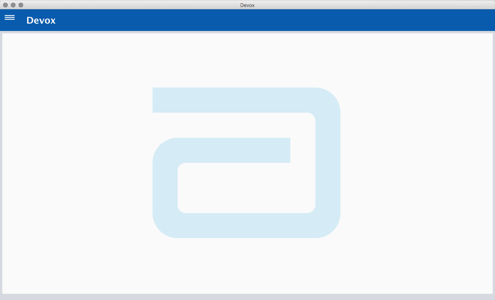
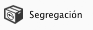
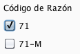
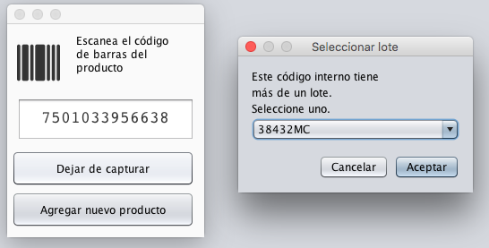
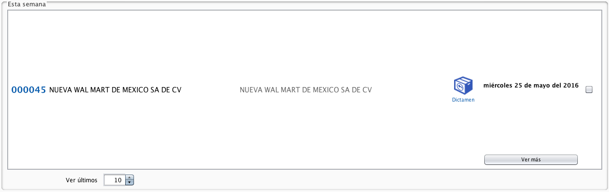
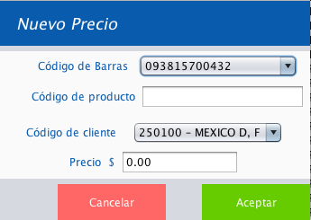

Guía de inicio y manejo del software
Devox para administración de devoluciones de producto de Abbott
RESUMEN
Devox es un software creado para administrar las devoluciones de productos en almacén, a través de un sistema que maneje y administre la Base de Datos de productos, clientes, devoluciones y todo lo relativo a ello.
Sistema operativo: Windows (7, 8 o 10), Mac OSx (10+) o Linux. Procesador recomendado: x64
MySQL Server (5.6+).
Java SE Runtime Environment (1.8+).
Memoria RAM: al menos 4GB (recomendado).
Almacenamiento: al menos 10GB (recomendado).
La instalación de Devox se divide en 3 partes: Instalación del manejador MySQL y Java RE; ejecución de scripts para generar la base de datos e instalación de ejecutables Java.
Comprobar que su computadora tenga instalado Java RE. En caso de que no, descargar desde el enlace mostrado arriba (Aceptando acuerdos de licencia y descargando la versión adecuada para su sistema operativo). Si está instalada la paquetería de Java en su computadora, asegurarse de tener la última versión. (Instrucciones aquí).
Ejecución de scripts
En la paquetería de Devox, encontrará un archivo llamado “DevoxDBv1.sql”. Este archivo es imprescindible para la instalación de Devox. Contiene la base de Datos del sistema con los los datos de Clientes, Sucursales, Canales de Venta, Divisiones, Productos, Lotes, Almacenes, Transportistas, Códigos de Razón y Motivos revisados hasta el 21 de Abril del 2016.
Llevar a cabo los siguientes pasos:
Iniciar MySQL en la ventana de comandos.
Acceder con las credenciales de usuario mayor o usuario “admin” (creado para Devox).
Escribir el siguiente comando en mysql:
mysql> sourcefile_name Nota: sustituir file_name por la ruta del archivo “DevoxDBv1.sql”. Es útil arrastrar el archivo a la ventana de comandos.
Ejecutar
De esta manera , el sistema iniciará con Datos, pero con ninguna devolución. El folio con el que se inicia es el 000000. Ninguna Tarima existirá. Los precios a iniciar son los entregados en los datasets hasta el 21 de abril 2016.
En caso de que se requiera, si se ejecuta el script “DevoxDBv0sinDatos.sql” de la misma manera, creará la base de datos también desde cero, pero sin información de Clientes, Productos, Lotes y todo lo que conlleva (se mantienen los datos de Divisiones, Almacenes, Códigos de Razón y Motivos).
Instalación del ejecutable en Java
Dentro de la paquetería de Devox, copiar la carpeta “dist” a la ruta preferida para Devox (por ejemplo, “C:\Program Files\Devox\”).
Después de copiar esta carpeta, proceda a abrirla y copiar el archivo “Devox.jar”. Se recomienda pegar el acceso directo en Escritorio o el Menú de Inicio.
Para comenzar con Devox, de doble clic al nuevo Acceso Directo.
INICIANDO CON DEVOX
Acceso
Para acceder a Devox, es necesario contar con el nombre de Usuario y Contraseña. Al hacer doble clic en el ícono de Devox en el escritorio, y cargue la aplicación, aparecerá una ventana como la siguiente imagen:
Acceso de usuario a Devox
A continuación, ingresar Usuario y Contraseña para acceder. Si el usuario y contraseña ingresados no coinciden, el programa notificará al usuario con una alerta de error en acceso. Si es satisfactoria la validación, el usuario podrá continuar a la pantalla de bienvenida de Devox.
Bienvenida
El usuario a continuación podrá presenciar la pantalla principal de Devox que cuanta con simplemente un botón en el lado superior izquierdo de la pantalla, es el botón de Menú Principal.

Pantalla de bienvenida, el botón de Menú Principal está en el lado superior izquierdo de la pantalla.
Lo primero que debes conocer de devox
El menú principal consta de 3 partes: La barra de búsqueda, botón de configuraciones y botones de acceso a funciones de Devox
Menú principal
Al hacer clic en el botón de Menú Principal, se podrán mostrar los enlaces a distintas acciones en Devox
Los botones de acceso a funciones Devox son listados a continuación.
Ícono
Nombre
Descripción
Nueva Devolución
Abre un nuevo panel para crear un nuevo folio de devolución e insertar productos.
Devoluciones
Abre un panel con el listado de las últimas 10 devoluciones. Se pueden ver más devoluciones y buscar alguna en particular por número de folio. También se muestra la suma de devoluciones por estado.
Reportes
Muestra listados y conteo de las devoluciones segregados por día (hoy), semana en curso y mes actual. Se pueden generar reportes segregados por fechas y exportarlos.
Estados
Devoluciones segregadas por estado. Se pueden cambiar de estado e imprimir reportes.
Precios
Abre un panel con la tabla de lista de precios actuales de los productos. También hay opciones de ver precios por folios, insertar nuevos precios y actualizar los precios.
Tarimas
Muestra y administra las tarimas de devoluciones.
Catálogos
Abre un panel con opción a ver y administrar las entidades del sistema, como Clientes, Productos, Lotes, Almacenes, Canales de venta, Divisiones, Motivos y Transportes.
Búsqueda
Abre una ventana nueva para hacer búsquedas sobre Clientes y Lotes en Folios.
Configuraciones
Abre una ventana de ajustes: codificación, usuarios, respaldos y ruta para almacenar los archivos PDF.
Antes de arrancar con nuevas devoluciones en Devox, debe de configurar los parámetros iniciales del sistema para poder comenzar.
Configuraciones
De clic en el ícono de Configuraciones, abriendo el panel de Menú Principal
A continuación, aparecerá una ventana con cuatro distintas pestañas en el lado superior:
Codificacion
Usuarios
Respaldos
PDF
Codificación
Ventana de configuración 1: Codificación
Esta ventana cuenta con un pequeño formulario de 6 espacios. Cada espacio representa la codificación de Sistemas de calidad que se utilizan en DHL para la impresión de reportes. Modifique cada uno de los campos con el código apropiado para cada tipo de reporte.
Usuarios
Ventana de configuración 2: Usuarios
En este módulo puede configurar los usuarios disponibles en Devox. Por defecto existen dos usuarios, mostrados a continuación:
Usuario
admin
Contraseña
abbott
Permisos
true
Usuario
Mari
Contraseña
DHL
Permisos
false
El permiso, se define con dos tipos: true y false. El permiso true corresponde a un usuario con el permiso total de administrar Devox, tanto dar altas, bajas y modificación de datos. El permiso false corresponde a los usuarios que requieran entrar a Devox pero no influir directamente en las bases de datos. Es decir, sólo pueden dar de alta nuevas devoluciones, ver las devoluciones hechas y generar reportes (de devoluciones y de tarimas). No pueden acceder a los catálogos, configuraciones ni precios.
De click en Nuevo Usuario para agregar a la base un nuevo usuario. Aparecerá un formulario como el de la siguiente figura, donde usted debe de definir el nuevo nombre y contraseña para este usuario. Si da clic en la casilla Es un usuario con todos los permisos, el nuevo usuario tendrá todos los permisos del tipo true.
Si da click en el botón Eliminar usuario, usted podrá eliminar el usuario actualmente seleccionado.
Nota: Procure no eliminar el usuario que tiene los permisos "true", ya que éste es el único que puede acceder a este panel de configuraciones.
El botón Editar usuario le permite modificar el nombre y/o contraseña del usuario seleccionado.
Respaldos
Ventana de configuración 3: Respaldos
Para hacer un respaldo oportuno de la base de datos, usted necesita ejecutar Devox como un usuario con permisos de administrador del sistema. Haga clic en Hacer respaldo para crear un nuevo archivo de respaldo. El archivo se guarda con la extensión ".sql" y usted debe asegurarse de que la copia de este archivo esté asegurada, pues no cuenta con ningun tipo de cifrado y contiene toda la información de Devox.
Si usted desea restaurar algún respaldo ya hecho de devox, haga clic en Restaurar y seleccione el archivo de donde usted tiene el respaldo.
PDF
En la última pestaña, se encuentra la ruta por defecto del directorio donde se guardaran copias de los reportes generados en Devox.
Haga click en Cambiar y seleccione la carpeta en su sistema donde quiere guardar los archivos PDF que genera Devox en cada reporte.
Nota: Es muy importante que usted seleccione la ruta de los archivos a guardar desde que abre por primera vez Devox, ya que se pueden generar los documentos pero en cierto punto del proceso, Devox no encuentre la ruta de los reportes y el archivo quede dañado.
NUEVA DEVOLUCIÓN
Conceptos de una devolución
Antes de iniciar a capturar productos para una devolución, debe de llenar un formulario adecuadamente para guardar la información que necesita la devolución para ser procesada.
Haga click en el menú principal
Haga click en el ícono de Nueva devolución
Aparecerá un formulario como el siguiente:
Formulario de Devolución
FolioMuestra el folio actual, siendo el anterior inmediato el último folio de devolución capturado. Su orden es incremental, numérico y en formato de 6 dígitos.
Estado

Muestra el estado inicial de la captura. Siempre será segregación.
Destino
Define si la devolución está considerada para productos hacia Destrucción o Productos Aptos. Siendo una devolución de productos aptos, no se define una Tarima ni número de Destrucción Fiscal. Para cambiar el destino, hacer clic sobre el ícono.
Cliente
Es una barra desplegable que contiene la lista de todas las Sucursales registradas, ordenadas por el número de cliente. Para acceder más rápido a alguna, comenzar a teclear el número de cliente de la Sucursal deseada. Al seleccionar alguna, los campos en gris se autorellenan con el Nombre del Cliente, El nombre de Sucursal y División a la que pertenece.
Fecha de recibido
Colocar la fecha en que se recibe la devolución al almacén. Esta fecha diferente puede ser distinta a la fecha de captura, pero nunca un después de esta. Para seleccionar la fecha, hacer clic en el ícono de calendario a la derecha y seleccionar el día.
Código de Razón

Seleccionar cualquiera de las dos opciones (71 o 71-M). No podrá continuar la devolución si deja este campo vacío.
Motivo
Enlistados en una barra, seleccionar el código del motivo de devolución.
Almacén
Seleccionar de la barra el código del almacén.
Folio Abbott
Escribir el folio Abbott de la devolución. Pueden ser caracteres alfanuméricos de hasta 40 posiciones.
Folio del Cliente
Escribir el folio del cliente de la devolución. Pueden ser caracteres alfanuméricos de hasta 40 posiciones.
Factura
Escribir la factura correspondiente a la devolución. Pueden ser caracteres alfanuméricos de hasta 40 posiciones.
Tarima
Si la devolución es con destino a Destrucción, poner el nombre de la tarima destino de los productos. Puede ser una tarima que ya exista, o al escribir el nombre de una tarima inexistente, esta se crea como nueva. Mientras la devolución sea con destino a destrucción, no podrá continuar si deja el nombre de la tarima vacío.
Observaciones
Escribir observaciones de la devolución . Por defecto, está la descripción del motivo de devolución, pero se puede cambiar. Si este campo está vacío, no se puede continuar.
Cajas
Definir el número de cajas de la devolución. Por defecto, se define 1 caja.
Transporte
Seleccionar de la barra desplegable el nombre del Transporte de donde procede la devolución.
Destrucción
En una pequeña lista numérica del 1 al 12, seleccionar el folio de destrucción fiscal de la tarima (si aplica).
Codificación
Se muestran los actuales códigos (referencia y destrucción) de Calidad.
Captura
Al incluir todos los datos de la nueva devolución, presionar la tecla de Continuar. (Si se presiona la tecla de Cancelar, regresa a la página de inicio sin proceder a la captura de productos.) A continuación aparece una pantalla diferente con los elementos necesarios para proceder a capturar productos (imagen 6).
Ventana de captura de productos
Abre la ventana para capturar códigos de barras, haciendo clic en el botón Agregar
Conecte su escáner de códigos de barras a la computadora y coloque el cursor en el campo de texto. Puede escanear un producto o escribir el código de barras manualmente (presionar Entrar para capturar el producto).
Ventana de captura de productos
Tras escanear el Código de Barras, es requisito que el producto exista en la Base de Datos para poder proceder a su captura. Cuando se inserta, aparecerá en su caso una o dos ventanas.
La primera es para seleccionar el código interno del producto del código de barras escaneado. Si existe sólo un código interno relacionado al Código de Barras del producto, inmediatamente se toma este como defecto.

Ventana de captura de productos
La segunda ventana es la de selección de Lote. Si en la base de datos el producto cuenta con al menos un Lote, este aparecerá en la lista. Al final de la lista de selección aparecerá la leyenda
Agregar nuevo Lote. En caso de querer agregar un lote nuevo a la base de datos y seleccionar este para el producto de la devolución en curso, seleccione este elemento y de clic en aceptar. A continuación aparecerá una ventana solicitando el nombre del nuevo lote. Escríbalo y de clic en Aceptar.
Como se puede observar, el producto ha sido agregado a la tabla de Captura. La suma de productos individualmente, así como el monto total al momento de la devolución aparecen en color azul en la esquina inferior derecha de la tabla. Este dato se va actualizando automáticamente al momento de cualquier entrada o salida de producto en la devolución en curso.
Cuando se desee dejar de capturar códigos de barras, cerrar la ventana de “Agregar” con el botón Dejar de capturar.
Para agregar un nuevo producto, sin salir de la captura en curso, puede pulsar el botón Agregar nuevo producto. Cómo dar de alta productos nuevos.
En caso de que usted necesite eliminar alguno de los productos que capturó, seleccione la fila donde se encuentra el producto a eliminar de la captura y haga clic en el botón Eliminar
Nota: Si aparece una alerta como "El código de barras no existe en la base de datos", pero usted está seguro que se encuentra; es porque el producto no está guardado para el cliente que está utilizando en la captura. Pruebe dar de alta el producto para este cliente en específico.
Continue capturando productos de la misma manera. Si requiere editar la cantidad de productos capturados, o evitar capturar varias veces el mismo producto, haga doble clic en la celda de Cantidad en la fila del producto capturado y modifique el número de cantidad de productos. Después presione "Enter" en su teclado.
Si usted desea cambiar el precio del producto capturado, haga doble clic en la celda del Precio y modifíquelo. Recuerde que usted debera poner siempre un número con dos decimales (separados por un punto decimal) y sin comas o espacios.
Durante la captura, tal vez usted necesite cambiar la tarima de destino a la cual los productos se van registrando (en el caso de devolución No Apta). Para cambiar la tarima de destino, haga clic en el botón Cambiar tarima .
Aparecerá una serie de tres ventanas con información de la nueva tarima que quiere usar para la devolución.
Nota: Una tarima puede contener productos de distintos folios, e incluso de distintos tipos de clientes. Es responsabilidad del usuario elegir la tarima de la devolución.
Al terminar de capturar todos los productos de la devolución, existen dos procedimientos: Cerrar o Imprimir.
El botón “Cerrar” termina la captura y guarda todos los datos en una nueva devolución, pero mantiene el estado de esta en “Segregación”.
El botón “Imprimir”, además de también guardar todos los datos en una nueva devolución, cambia el estado de esta a “Captura” y guarda en formato PDF en la ruta configurada el reporte de la devolución. El usuario verá una notificación para elegir si desea abrir el archivo generado. (El archivo se abre externamente con el lector de archivos PDF que tenga instalado el usuario, como puede ser Adobe Acrobat Reader).
El archivo PDF generado cuenta con dos versiones (ver ejemplos):
Las devoluciones cuentan con 4 estados distintos:
SegregaciónDictamenCaptura DLXEntregado
Panel de devolución
Cada devolución aparece como un elemento en forma de Lista en la ventana principal de Devoluciones. De izquierda a derecha:
Número de folio: número de folio DHL de la devolución
Nombre de Cliente
Nombre de la Sucursal de la devolución
Estado de la devolución: segregación, dictamen, captura DLX o entregado.
Fecha de captura
Botón de “Ver más”
Casilla de selección
Si usted desea ver más información de una devolución, haga clic en el botón Ver más y aparecerá una ventana como la siguiente.
En el lado izquierdo podrá observar toda la información de la devolución seleccionada. Podrá editar únicamente el Folio Abbot, Folio Cliente, Factura y Almacén.
Para editarlos, haga clic en el botón "Editar" que está en el panel izquierdo.
Si usted quiere agregar, modificar o eliminar algún producto capturado, también debe de hacer clic en el botón Editar. Una vez habilitado este botón, haga clic en Agregar y podrá proceder a hacer una captura de la misma forma que se instruyó en la sección anterior.
El botón Cambiar Estado le permite cambiar un producto de un estado, al siguiente (excepto a "Entregado", que es el último estado).
Para guardar todos los cambios hechos, en la captura de productos y en la modificación de los detalles de devolución, usted debe de dar clic en el botón Actualizar.
Si cierra la ventana sin dar clic en este botón, no se guardarán los cambios hechos (excepto el cambio de estado, si lo hizo).
Nota: Las devoluciones, una vez hechas, no se pueden cambiar de destino (apto o destrucción).
Desde esta ventana usted también puede imprimir la relación del producto, haciendo un reporte de devolución. De clic en el botón Imprimir para generar el reporte en pdf.
Ver Devoluciones
En el menú principal hay tres módulos diferentes que le permiten administrar devoluciones:
Devoluciones
Reportes
Estados
Devoluciones
En esta ventana usted podrá observar en general las últimas devoluciones hechas. En la parte inferior podrá observar un pequeño panel con tres opciones: ver últimas devoluciones, ver por fechas y una barra de buscar. Por defecto, podrá usted ver las últimas 10 devoluciones capturadas en Devox, pero si usted requiere ver más o menos, cambie este valor numérico o de clic en las flechas para incrementar o disminuir el número de folios mostrados.
Si usted prefiere ver las devoluciones hechas en un rango específico de fechas, de clic en el botón Ver por fechas y aparecerá una ventana donde tiene que seleccionar el rango exclusivo de fechas que desea que se consulte.
Por último, puede buscar una devolución en específico por número de folio DHL. Escriba en esta barra de búsqueda el número de folio que quiere localizar. Recuerde que la primera devolución tiene el folio 1. Si borra el número de folio que busca, es normal que en el panel aparezca la alerta "Sin resultados". De clic en alguna de las flechas de ver últimas devoluciones o cambie el número para restablecer el panel.
Reportes
El panel de reportes se divide en cuatro subsecciones:
Hoy
Puede ver las últimas 10 devoluciones que se han capturado al día. Puede cambiar la cantidad de devoluciones visibles, cambiando el número en Ver últimos
Semana

Puede ver las últimas 10 devoluciones que se han capturado en la semana en curso (de domingo a sábado). Puede cambiar la cantidad de devoluciones visibles, cambiando el número en Ver últimos
Mes
Puede ver las últimas 10 devoluciones que se han capturado en el mes en curso (a partir del día 1). Puede cambiar la cantidad de devoluciones visibles, cambiando el número en Ver últimos
Características específicas
Este a su vez se divide en Reporte principal (lado izquierdo) y estadísticas (lado derecho).
En el reporte principal, usted verá una consulta de todas las devoluciones capturadas en un rango de fecha específicos. Para simplemente ver esta tabla, de clic en el botón Ver reporte principal y al elegir el rango de fechas, una ventana aparecerá con la tabla de detalles de las devoluciones hechas en dentro del rango de fechas que especificó.
Esta tabla la puede exportar a dos tipos diferentes de interfaces: tipo CSV u tipo TXT. El reporte CSV lo puede usted generar haciendo clic en ícono de Exportar reporte principal en Excel. Elija la ruta y el nombre que desee para guardar el archivo generado.
Por otro lado está el reporte con formato RMA. Haga clic en Exportar reporte como TXT y elija también el nombre y ruta para guardarlo.
En la sección de Estadísticas verá dos módulos: la cantidad de reportes que hay por día, semana y mes.
En el otro módulo verá la cantidad total de devoluciones en cada estado. Esta cantidad suma todas las devoluciones hechas a lo largo de todo el historial de Devox. Para saber los estados de devoluciones hechas, pero en un rango específico de fechas, de clic en el botón Seleccionar rango de fechas y después de elegir las fechas, en el mismo panel verá los números de devoluciones en cada estado.
Estados
En esta ventana hay cuatro paneles en los que cada uno contiene las devoluciones en los diferentes estados. En los cuatro páneles puede seleccionar, deseleccionar todas las devoluciones en el panel. También puede seleccionar por rango de fechas y ver últimas devoluciones, al igual que en ventanas anteriores se describió esta función.
Puede seleccionar las devoluciones una a una haciendo clic en la casilla de seleción o dando doble clic en el espacio en general de la devolución.
Lo distintivo en los páneles de cada estado es la función que tienen para imprimir los reportes de estados. En el panel de segregación puede cambiar al estado Dictamen las devoluciones seleccionadas.
En el panel de captura, puede imprimir el reporte de dictaminados de los folios seleccionados (después de seleccionar las devoluciones, haga clic en el botón Imprimir). También, como en el panel anterior, cambie las devoluciones seleccionadas de estado Dictamen a estado Captura DLX con el botón Cambiar a Captura.
En el panel de Captura DLX, después de seleccionar las devoluciones, puede cambiar de estado a Entregado haciendo clic en el botón Cambiar a Entregado o también puede imprimir el reporte y al mismo tiempo cambiar de estado con el botón Imprimir y cambiar a entregado.
Por último, en el panel de devoluciones en estado Entregado, puede imprimir el reporte de las devoluciones seleccionadas en este estado, con el botón Imprimir.
PRECIOS
En la tabla principal está la tabla con los últimos precios de cada producto registrado. Puede modificar el orden de las columnas, arrastrándolas con el cursor.
Ver precios por folio
En esta ventana usted puede consultar los precios de cada producto en cierta devolución, buscándola por folio DHL. Para esta función, de clic en Ver precios por folio y a continuación aparecerá una pequeña ventana con la lista de todos los folios. Seleccione el folio del cual quiera consultar información y de clic en Aceptar. En la pantalla, la tabla cambiará y mostrará los productos capturados en esa devolución y su precio.
Actualizar precios
Hay dos maneras de actualizar los precios, por archivo e individualmente. Este primer método describe cómo cambiar los precios de varios productos a partir de un archivo en excel.
Para poder modificar estos precios, usted necesita de un archivo en excel con la lista de todos los precios.
Pasos para actualizar precios
El orden de los datos debe ser el siguiente: Código de barras, Código de producto, Clave del cliente y Precio.
La tabla de excel no debe de contar con encabezados de tabla. También debe considerar que los precios sean sólo un número con dos decimales (separado por punto) y sin comas.
Exporte la tabla como un archivoCSV (instrucciones para exportar en Microsoft Office Excel)
Considere que Microsoft Office Excel suele modificar el formato de números grandes en algunos datos. Cuide que Excel no cambie el número del código de barras, o cualquier dato en general.
Una vez creado el archivo CSV, vaya a Devox y de clic en el botón Actualizar precios
Busque el archivo que acaba de generar, con la extensión .csv y selecciónelo
Aparecerá una ventana con todos los datos del archivo. Si hay algo que no concuerda o coincide en el archivo, lo notará en esta tabla. Puede, si lo desea, editar una última vez alguna fila.
De clic derecho sobre cualquier fila para poder agregar una nueva fila (en caso de añadir otro producto) o eliminar alguna fila seleccionada.
De clic en el botón Actualizar. Verá en la barra de progreso el estado de la actualización
Al final de la actualización, le aparecerá una ventana emergente que indicará que los precios han sido actualizados. Cierre la ventana de Actualizar precios para concluir esta operación.
Nota: Recuerde que los precios solo se actualizan sobre productos que ya existen. Para agregar productos vaya a agregar producto nuevo.
Insertar nuevo precio
El cambio de precios también puede ser individual. De clic en el botón insertar nuevo precio y aparecerá una ventana como la siguiente:

Seleccione el número del código de barras (puede escanearlo), inserte el código de producto, clave de cliente y precio (use dos decimales, separados por un punto y sin comas o espacios).
De clic en Aceptar y se guardará el nuevo precio.
La fecha de actualización del precio corresponde al momento en el que esta actualización se lleva a cabo.
TARIMAS
Las tarimas contienen los productos que, cuya devolución destino es destrucción.
En este panel, igual que en los de devoluciones, puede observar las últimas 10 tarimas, ordenadas por fecha de creación. siempre, la última tarima es la tarima abierta (color azul). Las dos fechas que aparecen en el módulo de la tarima representan, en color azul, la fecha de creación, y en negro la fecha en la que fue cerrada.
Una tarima es identificada por un nombre específico que define siempre el usuario. Procure que este nombre no se vea repetido nunca. Las tarimas, aunque estén cerradas, pueden recibir todavía productos.
De clic en el botón "Ver más" de una tarima en específico.
Podrá observar todos los productos de la tarima e información de ella. Para generar el reporte de la tarima en PDF, de clic en Imprimir.
Ver ejemplo de reporte de tarima.
CATÁLOGOS
De la barra en la parte superior en la ventana de catálogos, seleccione el elemento que quiere consultar para ver la lista.
Clientes
Cada Cliente cuenta con un identificador: el RFC. El cliente, a su vez tiene una o más Sucursales que están identificadas por un Código de Cliente, o también conocido como Clave del cliente (o sucursal). A su vez, los clientes pueden tener alguno de los Canales de venta y las sucursales pertenecen a distintas divisiones.
Alta
De clic en el ícono de agregar () y podrás observar la ventana de Nuevo cliente.
Cliente: en el primer apartado, selecciona la casilla Nuevo Cliente y escriba el RFC y nombre del cliente. En caso de querer usar un cliente que ya existe, seleccione la casilla Usar cliente existente y eliga de la lista el cliente.
Sucursal: en el segundo apartado, seleccione la casilla Nueva Sucursal y escriba la clave de cliente y nombre de sucursal en los respectivos campos.
División: en el tercer apartado, haga clic en la casilla Usar división existente para utilizar alguna en existencia, o en Nueva división para crear una nueva división.
Canal de venta: en el último apartado, haga clic en la casilla Usar canal de venta existente para elegir una de las que están en la base de datos. Sino, de clic en Nuevo Canal de Venta para crear una nueva.
Haga clic en Aceptar y el cliente nuevo sera creado.
Baja
Seleccione la fila del cliente que desea eliminar. De clic en el ícono de eliminar () y a continuación aparecerá una ventana emergente, con las siguientes indicaciones:
Confirmación: Devox le pide confirmar que desea eliminar el cliente. De clic en Aceptar para confirmar.
Nota: En caso de que el cliente tenga productos relacionados a él, no podrá eliminarlo hasta que borre de la base de datos los productos relacionados a dicha sucursal. (Vea eliminar productos)
Cambio
Seleccione la fila del cliente que desea editar. De clic en el ícono de editar () y a continuación aparecerá una ventana para confirmar que usted desea editar este cliente. De clic en Aceptar y al igual que en alta, la ventana de agregar aparecerá. Cambie los datos del cliente seleccionado de la siguiente forma:
Cliente: en el primer apartado, selecciona la casilla Editar Cliente existente y escriba el RFC y nombre del cliente. En caso de querer usar el mismo cliente, seleccione la casilla Usar cliente existente y eliga de la lista el cliente que necesite.
Sucursal: en el segundo apartado, mantenga seleccionada la casilla Editar Sucursal existente y escriba la clave de cliente y nombre de sucursal en los respectivos campos.
División: en el tercer apartado, haga clic en la casilla Usar división existente para utilizar alguna en existencia, o en Nueva división para crear una nueva división.
Canal de venta: en el último apartado, haga clic en la casilla Usar canal de venta existente para elegir una de las que están en la base de datos. Sino, de clic en Nuevo Canal de Venta para crear una nueva.
Haga clic en Aceptar y el cliente se guardará con su respectiva edición.
Productos
Alta
De clic en el ícono de agregar () y podrás observar la ventana de Nuevo producto.
Código de barras: escriba el código de barras del nuevo producto.
Código interno: escriba el código interno del nuevo producto.
Descripción: escriba el nombre descriptivo del producto nuevo.
División: elija de la lista la división a la que pertenece el nuevo producto.
Después de llenar estos datos, aparecerá en la pantalla una lista como la siguiente:
Esta tabla corresponde a la división ANI
De clic en la celda de la columna Precio, y escriba el precio con decimales, sin espacios ni comas, que corresponde a este nuevo producto. Haga lo mismo para todos los clientes en la tabla.
Una vez completada la lista, de clic en Guardar. Si deja un espacio en blanco, por defecto se guardará el precio en 0.00.
Baja
Seleccione la fila del producto que desea eliminar. De clic en el ícono de eliminar () y a continuación aparecerá una ventana emergente, con las siguientes indicaciones:
Confirmación: Devox le pide confirmar que desea eliminar el producto. De clic en Aceptar para confirmar.
Seleccione una opción: De todos los clientes o Sólo de esta sucursal: Devox le pide confirmar que desea eliminar el producto. De todos los clientes se refiere a eliminar el producto de todas las sucursales existentes. Sólo esta sucursal sólo elimina el producto de la sucursal que seleccionó.
Nota: En caso de que el producto tenga devoluciones relacionadas a él, no podrá eliminarlo.
Cambio
Seleccione un producto que desea cambiar. De clic en el ícono de editar () y aparecerá la misma ventana que en Agregar Producto, sólo que llena con los datos del producto a editar.
Llene los campos de precios en la tabla y al terminar, de clic en Guardar
Lotes
Alta
De clic en el ícono de agregar () y podrás observar la ventana de Nuevo lote.
Seleccione de la lista el código de producto al que quiere agregar un lote. Escriba en el siguiente campo el nuevo lote y de clic en Aceptar.
Baja
Seleccione el lote que desea eliminar. De clic en el ícono de eliminar () y aparecerá la ventana de confirmación para borrar el lote seleccionado. De clic en Aceptar para continuar.
Cambio
Seleccione el lote que desea editar. De clic en el ícono de editar () y aparecerá la ventana de confirmación para editar el lote seleccionado. De clic en Aceptar para continuar. Aparecerá la misma ventana de "Agregar" pero con los campos del lote seleccionado. Modifique los datos y para guardar de clic en Aceptar.
Almacenes
Alta
De clic en el ícono de agregar () y podrás observar la ventana de Nuevo Almacén.
Escriba en los campos la descripción y CV del nuevo almacén y de clic en Aceptar.
Baja
Seleccione el almacén que desea eliminar. De clic en el ícono de eliminar () y aparecerá la ventana de confirmación para borrar el almacén seleccionado. De clic en Aceptar para continuar.
Cambio
Seleccione el almacén que desea editar. De clic en el ícono de editar () y aparecerá la ventana de confirmación para editar el almacén seleccionado. De clic en Aceptar para continuar. Aparecerá la misma ventana de "Agregar" pero con los campos del almacén seleccionado. Modifique los datos y para guardar de clic en Aceptar.
Canales de Venta
Alta
De clic en el ícono de agregar () y podrás observar la ventana de Nuevo Canal de Venta.
Escriba en el siguiente campo el nuevo canal de venta y de clic en Aceptar.
Baja
Seleccione el canal de venta que desea eliminar. De clic en el ícono de eliminar () y aparecerá la ventana de confirmación para borrar el canal de venta seleccionado. De clic en Aceptar para continuar.
Cambio
Seleccione el canal de venta que desea editar. De clic en el ícono de editar () y aparecerá la ventana de confirmación para editar el canal de venta seleccionado. De clic en Aceptar para continuar. Aparecerá la misma ventana de "Agregar" pero con el campo de canal de venta seleccionado. Modifique los datos y para guardar de clic en Aceptar.
Divisiones
Alta
De clic en el ícono de agregar () y podrás observar la ventana de Nueva división.
Escriba en el siguiente campo la nueva división y de clic en Aceptar.
Baja
Seleccione la división que desea eliminar. De clic en el ícono de eliminar () y aparecerá la ventana de confirmación para borrar la división seleccionada. De clic en Aceptar para continuar.
Cambio
Seleccione la división que desea editar. De clic en el ícono de eliminar () y aparecerá la ventana de confirmación para editar la división seleccionada. De clic en Aceptar para continuar. Aparecerá la misma ventana de "Agregar" pero con los campos de la división seleccionada. Modifique los datos y para guardar de clic en Aceptar.
Motivos
Alta
De clic en el ícono de agregar () y podrás observar la ventana de Nuevo Motivo.
Escriba en los campos la descripción y el ID del nuevo motivo y de clic en Aceptar.
Baja
Seleccione el motivo que desea eliminar. De clic en el ícono de eliminar () y aparecerá la ventana de confirmación para borrar el motivo seleccionado. De clic en Aceptar para continuar.
Cambio
Seleccione el motivo que desea editar. De clic en el ícono de editar () y aparecerá la ventana de confirmación para editar el motivo seleccionado. De clic en Aceptar para continuar. Aparecerá la misma ventana de "Agregar" pero con los campos del motivo seleccionado. Modifique los datos y para guardar de clic en Aceptar.
Transportes
Alta
De clic en el ícono de agregar () y podrás observar la ventana de Nuevo Transporte.
Escriba en los siguientes campos el nuevo transporte y su ID y de clic en Aceptar.
Baja
Seleccione el transporte que desea eliminar. De clic en el ícono de eliminar () y aparecerá la ventana de confirmación para borrar el transporte seleccionado. De clic en Aceptar para continuar.
Cambio
Seleccione el transporte que desea editar. De clic en el ícono de editar () y aparecerá la ventana de confirmación para editar el transporte seleccionado. De clic en Aceptar para continuar. Aparecerá la misma ventana de "Agregar" pero con los campos del transporte seleccionado. Modifique los datos y para guardar de clic en Aceptar.